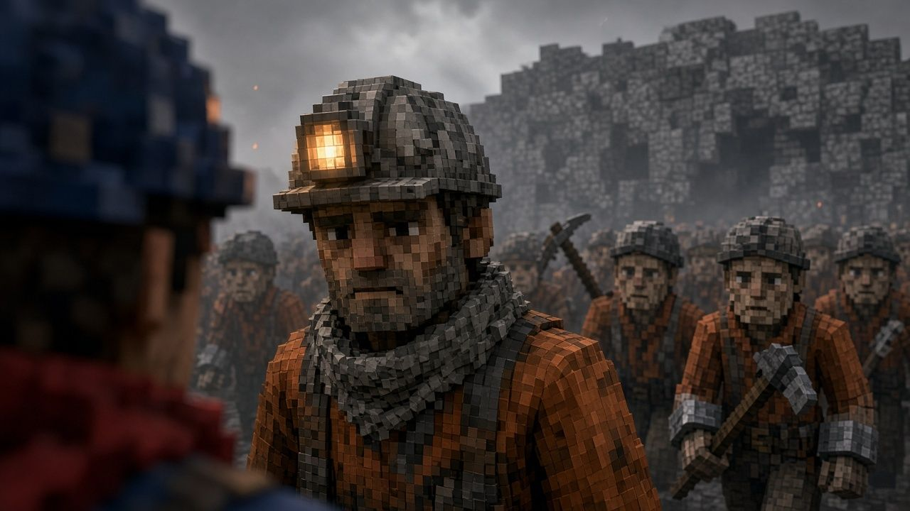

Uzaktan bakış
Helion Deepworks gezegeni önce uzaktan tanıdı. Yörüngeye üç sonda bıraktı ve sondalar bir yıl boyunca yüzeyi taradı. Gördükleri kara cam ovalarıydı: soğumuş lavdan obsidyen ve üstünde ince bir kül örtüsü. Eski volkanlar çoktan sönmüştü. Raporun ilk sayfasında tek bir kelime vardı: uykuda.
Kristal
Sondaların asıl bulduğu derindeydi. Kara camın çok altında, damar damar bir kristal yatıyordu. Galaksinin en nadir enerji kristaliydi. Yumruk kadar bir parçası, bir yük gemisini bir yıldızdan ötekine götürmeye yetiyordu. Helion'un o güne kadar kazdığı bütün ocaklar bu kadarını hiç vermemişti.
Karar
Karar gezegenden çok uzakta, şirketin yönetim kurulunda verildi. Raporu okuyanların hiçbiri Pyrelle'e ayak basmamıştı. Uykudaki bir kabuk ucuz bir kabuktu. İlk gemilere sığınak yerine sondaj makinesi yüklendi. Şirket buraya cevher için geldi.
İniş
İlk gemiler ovaya indiğinde kül motorların altından kalktı ve dakikalarca havada asılı kaldı. Gök gri-maviydi, ufukta turuncu bir parıltı duruyordu. İnenler ilk gece çadırlarını kara camın üstüne kurdu. Kazıklar cama girmedi, çadırları taşlarla bağladılar. Sabah botların izleri külde duruyordu.
İlk ağızlar
İlk yıl ovada üç maden ağzı açıldı ve kuyular kristale doğru kayanın derinine indi. İşi sözleşmeli madenciler ve cezalarını madende çeken mahkûmlar yaptı. Aileler ikinci gemiyle geldi. Kendilerine Pyrellian dediler. Şirketin kayıtlarında ise yalnızca vardiya numaraları vardı.

Zararsız görünenler
Külün altında küçük canlılar yaşıyordu. Kedi büyüklüğündeydiler ve yavaş yürüyorlardı. Işık düşünce külün içine gömülüyorlardı. Gezegenin canlıları zararsız görünüyordu ve raporlara da öyle geçti. Madenciler onları külden çıkarıp avuçlarında taşıdı. İlk yılın sonunda ilk kristal yükü yörüngeye çıktı. Dokuz yıl para getirdi.